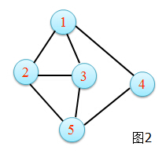
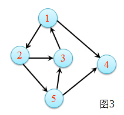
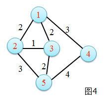

图论
图论〔Graph Theory〕是数学的一个分支。它以图为研究对象。图论中的图是由若干给定的点及连接两点的线所构成的图形， 这种图形通常用来描述某些事物之间的某种特定关系，用点代表事物，用连接两点的线表示相应两个事物间具有这种关系。
图是一个顶点集合V和一个顶点间关系的集合E组成，记G=(V,E) V：顶点的有限非空集合。 E：顶点间关系的有限集合（边集）。 存在一个结点v，可能含有多个前驱节点和后继结点。
无向图 在G=(V,E)中，如果对于任意的结点a,b∈V，当(a,b)∈E时，必有(b,a)∈E（即关系R对称），此图称为无向图。
无向图中用不带箭头的边表示顶点的关系。
eg： V={1,2,3,4,5} E={(1,2),(1,3),(1,4),(2,3),(2,5),(3,5),(4,5)} 图2

有向图 在G=(V,E)中，如果对于任意的结点a,b∈V，当(a,b)∈E时，(b,a)∈E未必成立，称此图为有向图。
有向图中通常用带箭头的边连接两个有关联的结点。
eg: V={1,2,3,4,5} E={<1,2>,<1,4>,<2,3>,<2,5>,<3,1>,<5,3>,<5,4>} 图3

带权图
一般的图边上没有数字，边仅表示两个顶点间相连接关系。
eg： 图2
图中的边可以加上表示某种含义的数值，数值称为边的权。
eg：图4

在无向图中，顶点v的度是指与顶点v相连的边的数目D(v)。 eg: 图2中，D(2)=3。 在有向图中， 入度：以该顶点为终点的边的数目。 出度：以该顶点为起点的边的数目。 度：等于该顶点的入度与出度之和。 eg： 图3中，ID(3)=2，OD(3)=1，D(5)=ID(5)+OD(5)=1+2=3。度数为奇数的顶点叫奇点，度数为偶数的点叫偶点。 所有顶点的度等于边数的两倍。
在图G=(V,E)中，过对于结点a,b，存在满足下述条件的结点序列x1...xk(k>1)有x1=a,xk=b,(xi,xi+1)∈E,i=1...k−1，则称结点序列x1=a,x2,...,xk=b为结点a到b的一条路径， 而路径上边的数目(k-1)则称为该路径的长度。 如果一条路径上的结点除起点x1和终点xk可以相同外，其它结点均不相同，称此路径为一条简单路径。x1=xk的简单路径称为回路（也称为环）。
连通：如果存在一条从顶点u到v的路径，则称u和v是连通的。
连通图：图中任意两个顶点都是连通的，称为连通图；否则为非连通图。
连通分量：无向图中的极大连通子图。
eg： 图2，图3，连通图。
阶（Order）：图G中顶集V的大小称作图G的阶。
子图（Sub-Graph）：当图G'=(V',E')其中V‘包含于V，E’包含于E，则G'称作图G=(V,E)的子图。每个图都是本身的子图。
生成子图（Spanning Sub-Graph）：指满足条件V(G') = V(G)的G的子图G。
导出子图（Induced Subgraph）：以图G的顶点集V的非空子集V1为顶点集，以两端点均在V1中的全体边为边集的G的子图，称为V1导出的导出子图；
以图G的边集E的非空子集E1为边集，以E1中边关联的顶点的全体为顶点集的G的子图，称为E1导出的导出子图。
度（Degree）：一个顶点的度是指与该顶点相关联的边的条数，顶点v的度记作d(v)。
入度（In-degree）和出度（Out-degree）：对于有向图来说，一个顶点的度可细分为入度和出度。
一个顶点的入度是指与其关联的各边之中，以其为终点的边数；出度则是相对的概念，指以该顶点为起点的边数。
自环（Loop）：若一条边的两个顶点为同一顶点，则此边称作自环。
路径（Path）：从u到v的一条路径是指一个序列v0,e1,v1,e2,v2,...ek,vk，其中ei的顶点为vi及vi - 1，k称作路径的长度。如果它的起止顶点相同，该路径是“闭”的，
反之，则称为“开”的。一条路径称为一简单路径(simple path)，如果路径中除起始与终止顶点可以重合外，所有顶点两两不等。
行迹（Trace）：如果路径P(u,v)中的边各不相同，则该路径称为u到v的一条行迹。
轨道（Track）：如果路径P(u,v)中的顶点各不相同，则该路径称为u到v的一条轨道。闭的行迹称作回路（Circuit），闭的轨称作圈（Cycle）。
（另一种定义是：walk对应上述的path，path对应上述的track。Trail对应trace。）
桥（Bridge）：若去掉一条边，便会使得整个图不连通，该边称为桥。
对于一个拥有n个顶点的无向连通图，它的边数一定多于n-1条。若从中选择n-1条边，使得无向图仍然连通，则由n个顶点及这 n-1条边（弧）组成的图被称为原无向图的生成树。 显示了一个无向连通图的生成树，双线圈表示的顶点为生成树的根结点。
在一个图中，每条边或弧可以拥有一个与之相关的数值，我们将它称为权。这些权可以具有一定的含义，
比如，表示一个顶点到达另一个顶点的距离、所花费的时间、线路的造价等等。这种带权的图通常被称作网。
图或网的生成树不是唯一的，从不同的顶点出发可以生成不同的生成树，但n个结点的生成树一定有n-1条边。
构造最小生成树的方法：最初生成树为空，即没有一个结点和一条边，首先选择一个顶点作为生成树的根，然后每次从不在生成树中的边中选择一条权值尽可能小的边，
为了保证加入到生成树中的边不会造成回路，与该边邻接的两个顶点必须一个已经在生成树中，一个则不在生成树中，若网中有n个顶点（这里考虑的网是一个连通无向图），
则按这种条件选择n-1边就可以得到这个网的最小生成树了。详细的过程可以描述为：设置2个集合，U集合中的元素是在生成树中的结点，V-U集合中的元素是不在生成树中的顶点。
首先选择一个作为生成树根结点的顶点，并将它放入U集合，然后在那些一端顶点在U集合中，而另一端顶点在V-U集合中的边中找一条权最小的边，
并把这条边和那个不在U集合中的顶点加入到生成树中，即输出这条边，然后将其顶点添加到U集合中，重复这个操作n-1次。
常见的图遍历方式有两种：深度优先遍历和广度优先遍历，这两种遍历方式对有向图和无向图均适用。
深度优先遍历的思想类似于树的先序遍历。其遍历过程可以描述为：从图中某个顶点v出发，访问该顶点， 然后依次从v的未被访问的邻接点出发继续深度优先遍历图中的其余顶点，直至图中所有与v有路径相通的顶点都被访问完为止。
对图的广度优先遍历方法描述为：从图中某个顶点v出发，在访问该顶点v之后，依次访问v的所有未被访问过的邻接点，然后再访问每个邻接点的邻接点， 且访问顺序应保持先被访问的顶点其邻接点也优先被访问，直到图中的所有顶点都被访问为止。
单源最短路径问题：给定一个加权图G=（V，E）和一个特定顶点s作为输入，找出从s到G中每一个其他点的最短加权路径。
我们由一个问题引入传递闭包的概念。有一个边不带权值的有向图G，要判断任意两个顶点i 和j 之间是否存在一条路径， 此处有两种情况，一种是路径长度为正数，一种是路径长度为非负。以上两种情况分别被称为图的传递闭包（transitive closure），和自反传递闭包（reflexive transitive closure）。
对于每个顶点，我们标记为known以及unknown，和上面一样，还得有一个距离的dv。与无权最短路径一样，Dijkstra算法也是按阶段进行，在每个阶段选择一个顶点v， 它在所有unknown顶点中具有最小的dv，同时算法声明从s到v的最短路径是known的。然后紧接着，不断的进行下去即可。
而如果一个图具有负的边值，那么Dijkstra算法就行不通了。这是因为一个顶点u被声明为known后，那就可能从某个另外的unknown顶点v有一条回到u的负的路径。
而“回到”就意味着循环，前面的例子中我们已经知道了循环是多么的……
问题并非没有解决的办法，如果我们有一个常数X，将其加到每一条边的值上，这样除去负的边，再计算新图的最短路径，最后把结果应用到原图上。然后这个解决方案也是布满了荆棘，
因为居多许多条边的路径变得比那些具有很少边的路径权重更重了。如果我们将s放到队列中，然后再每一个阶段让一个顶点v出队，
找出所有与v邻接的顶点w，使得dw>dv+cv,w，然后更新到dw和pw，并在w不在队列中时将它放到队列中，可以为每一个顶点设置一个位（bit）以指示它在队列中出现的情况。
如果图是无环的，则可以通过改变声明顶点为known的顺序，或者叫做顶点选取法则来改进Dijkstra算法。这种方法通过拓扑排序来选择顶点， 由于选择和更新可以在拓扑排序执行的过程中执行，因此新的算法只需要一趟就可以完成。
除了一些不能再简单的工程外，所有的工程都可以划分为若干个成为活动（activities）的子工程。比如说大学的课程，得修完了大学英语1才能修大学英语2，
也得修完了高等数学才能修线性代数、概率论、离散数学等。将这些作为顶点标记为图时，它便是一个有向图。
顶点表示活动的网（activity on vertex network）或AOV网，是用顶点表示活动或任务，边表示活动或任务之间的优先关系的有向图G。
在AOV网络G中，当且仅当从顶点i到j存在一条有向路径，则顶点i称为顶点j的前驱（predecessor）；当且仅当
拓扑排列是由有向图中所有顶点形成一个线性序列，对图中任意两个顶点i和j，如果顶点i是顶点j的前驱，则顶点i在拓扑序列中排在顶点j的前面。
AOE网络就是边表示活动的网络（activity on edge network），它的有向边表示在一个工程中所需完成的任务或活动，而顶点表示事件，用来标识某些活动的完成。在AOV网络中，
事件高数2完成意味着要先完成高数1；AOE网络中，事件高数2完成意味着已经完成了高数1。也就是说在AOE中，当一个事件发生时，就表明触发该事件的所有活动都已经完成。
在AOE网络中，有些活动可以并行地进行，所以完成整个工程所需的最短时间是从开始顶点到终止顶点的最长路径的长度。关键路径（critical path）就是一条具有最长路径长度的路径。
一个事件vi可以发生的最早发生时间（earliest time），是从开始顶点vo到顶点vi的最长路径的长度。活动vi的最迟开始时间（latest time），记作late(i)，是指在不增加工程工期的前提下，活动ai能够最迟的开始时间。
关键网络（critical activity）是指满足early(i)=late(i)的活动，一个活动的最迟开始时间late(i)与最早开始时间early(i)之间的差说明了该活动的关键程度。